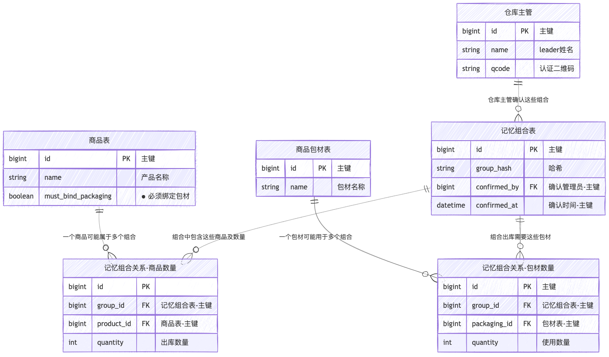
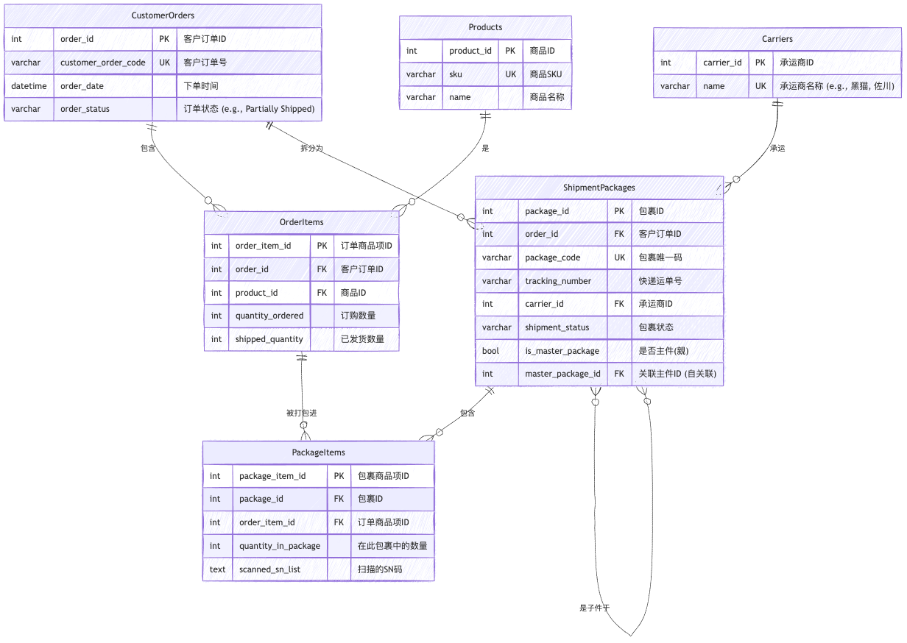

文档版本：v1.1
编写人：森山洸生
创建时间：2025-05-28
最近更新：2025-06-24
当前出库面单打印程序潜在问题，功能相似却分布在不同的页面，需要切换使用，产品和包材没有相关性，货运渠道和产品出库包裹也没有形成绑定关系
调整 UI 界面，增补部分功能，实现订单信息与快递单自动匹配，快速打印，并可接入多家快递接口，实现标准化、自动化的出库流程。
涉及需要调整的相关业务
| 角色 | 使用场景 |
|---|---|
| 仓库操作员 | 出库打印程序 |
| 管理员（财务） | 包材管理，增值管理 |
| 客户端（用户） | 暂无 |
① 扫描订单 - 判断订单 CODE 是否存在未出库订单 LIST 中
② 扫描【SKU 码/商品 SN 码/商品码】之一，查询所有未出库订单 LIST 中含有当前扫描的 CODE
商品扫描业务流程图
伪代码
数据结构
# ----------------------------------------------------
# 1. 数据结构 (Data Structures)
# ----------------------------------------------------
@dataclass
class Product:
name: str
sku: str
product_code: str
sn_list: List[str]
@dataclass
class OrderItem:
product: Product
quantity: int
scanned_sn: List[str] = field(default_factory=list)
@dataclass
class Order:
order_code: str
items: List[OrderItem]
creation_date: datetime
status: str = "awaiting_shipment"
未出库订单列表
# ----------------------------------------------------
# 2. 模拟的未出库订单列表 (Mock Data)
# ----------------------------------------------------
PRODUCT_A = Product(name="高配版笔记本电脑", sku="SKU-NB-HIGH", product_code="P-NB-01", sn_list=["SN-NB-001", "SN-NB-002"])
PRODUCT_B = Product(name="无线鼠标", sku="SKU-MOUSE-WL", product_code="P-MS-01", sn_list=["SN-MS-101", "SN-MS-102"])
PRODUCT_C = Product(name="机械键盘", sku="SKU-KB-MECH", product_code="P-KB-01", sn_list=["SN-KB-201", "SN-KB-202"])
PRODUCT_D = Product(name="高清显示器", sku="SKU-DISP-HD", product_code="P-DP-01", sn_list=["SN-DP-301"])
UNSHIPPED_ORDERS_LIST = [
Order(order_code="ORD-2023-001", items=[OrderItem(product=PRODUCT_A, quantity=1)], creation_date=datetime(2023, 10, 26, 10, 0, 0)),
Order(order_code="ORD-2023-002", items=[OrderItem(product=PRODUCT_A, quantity=1), OrderItem(product=PRODUCT_B, quantity=1)], creation_date=datetime(2023, 10, 26, 11, 0, 0)),
Order(order_code="ORD-2023-003", items=[OrderItem(product=PRODUCT_A, quantity=1), OrderItem(product=PRODUCT_B, quantity=1), OrderItem(product=PRODUCT_C, quantity=1)], creation_date=datetime(2023, 10, 26, 12, 0, 0)),
Order(order_code="ORD-2023-004", items=[OrderItem(product=PRODUCT_C, quantity=1), OrderItem(product=PRODUCT_D, quantity=1)], creation_date=datetime(2023, 10, 26, 13, 0, 0)),
Order(order_code="ORD-2023-005", items=[OrderItem(product=PRODUCT_C, quantity=1), OrderItem(product=PRODUCT_D, quantity=1)], creation_date=datetime(2023, 10, 26, 14, 0, 0)),
Order(order_code="ORD-2023-006", items=[OrderItem(product=PRODUCT_C, quantity=1), OrderItem(product=PRODUCT_D, quantity=1)], creation_date=datetime(2023, 10, 26, 14, 0, 0)),
]
核心功能函数
# ----------------------------------------------------
# 3. 核心功能函数 (Core Logic Functions)
# ----------------------------------------------------
current_session_order: Optional[Order] = None
def display_order_details(order: Order):
"""加载并显示订单的商品信息"""
global current_session_order
current_session_order = order
print(f"\n✅ 成功锁定订单: {order.order_code} (创建于: {order.creation_date})")
print(" 包含以下商品:")
for item in order.items:
print(f" - {item.product.name} (SKU: {item.product.sku}) x {item.quantity}")
def process_order_code_scan(order_code: str):
"""处理订单号扫描"""
print(f"\n[操作] 扫描订单号: {order_code}")
found_order = next((o for o in UNSHIPPED_ORDERS_LIST if o.order_code == order_code), None)
if found_order:
display_order_details(found_order)
else:
print(f"❌ 异常：订单号 {order_code} 不存在或已出库。")
def process_product_scan(scanned_code: str):
"""处理商品码扫描"""
print(f"\n[操作] 扫描商品码/SN/SKU: {scanned_code}")
candidate_orders = [
order for order in UNSHIPPED_ORDERS_LIST
if any(
scanned_code == item.product.sku or
scanned_code == item.product.product_code or
scanned_code in item.product.sn_list
for item in order.items
)
]
if not candidate_orders:
print(f"❌ 异常：在未出库订单中未找到含 {scanned_code} 的商品。")
return
if len(candidate_orders) == 1:
print("锁定到唯一订单。")
display_order_details(candidate_orders[0])
return
print(f"发现 {len(candidate_orders)} 个可能订单，应用筛选规则...")
# 规则 A: 最小可出库商品种类
min_item_types = min(len(order.items) for order in candidate_orders)
filtered_orders = [o for o in candidate_orders if len(o.items) == min_item_types]
print(f" 规则[最小商品种类]: 筛选后剩下 {len(filtered_orders)} 个订单。")
if len(filtered_orders) == 1:
display_order_details(filtered_orders[0])
return
# 规则 B, C, D
order_signatures = {}
for order in filtered_orders:
signature = tuple(sorted([item.product.sku for item in order.items]))
if signature not in order_signatures:
order_signatures[signature] = []
order_signatures[signature].append(order)
if len(order_signatures) == 1:
print(" 规则[品类一致]: 所有候选订单品类一致，应用先进先出原则。")
identical_orders = list(order_signatures.values())[0]
identical_orders.sort(key=lambda o: o.creation_date)
oldest_order = identical_orders[0]
final_candidates = [o for o in identical_orders if o.creation_date == oldest_order.creation_date]
if len(final_candidates) == 1:
print(" 规则[先进先出]: 成功锁定最早的订单。")
display_order_details(final_candidates[0])
else:
print(" 规则[时间相同]: 存在多个时间完全相同的最早订单，随机选择一个。")
chosen_order = random.choice(final_candidates)
display_order_details(chosen_order)
return
else:
print(" 规则[品类不同]: 存在多个品类不同的订单，需要进一步扫描。")
other_items_to_scan: Set[str] = set()
for order in filtered_orders:
for item in order.items:
product = item.product
if not (scanned_code == product.sku or scanned_code == product.product_code or scanned_code in product.sn_list):
other_items_to_scan.add(f"{product.name} (SKU: {product.sku})")
print("\n下一步操作建议：")
print("请扫描以下商品之一以确定唯一订单:")
for item_name in sorted(list(other_items_to_scan)):
print(f"- {item_name}")
主流程模拟
# ----------------------------------------------------
# 4. 主流程模拟 (Main Simulation)
# ----------------------------------------------------
def main():
"""模拟扫描流程"""
print("--- 场景1: 扫描一个不存在的订单号 ---")
process_order_code_scan("ORD-NON-EXIST")
print("\n" + "="*40)
print("--- 场景2: 扫描一个存在的订单号 (直接锁定) ---")
process_order_code_scan("ORD-2023-001")
print("\n" + "="*40)
print("--- 场景3: 扫描一个商品码，通过“最小商品种类”规则唯一确定订单 ---")
process_product_scan("SKU-NB-HIGH")
print("\n" + "="*40)
print("--- 场景4: 扫描商品码，匹配到多个品类不同的订单，提示用户 ---")
print("(临时修改数据以触发此场景)")
original_item = UNSHIPPED_ORDERS_LIST[2].items.pop() # 从ORD-003中移除键盘，使其也为2种商品
process_product_scan("SKU-MOUSE-WL")
UNSHIPPED_ORDERS_LIST[2].items.append(original_item) # 恢复数据
print("\n" + "="*40)
print("--- 场景5: 扫描商品，通过“先进先出”规则确定订单 ---")
process_product_scan("SKU-KB-MECH")
print("\n" + "="*40)
print("--- 场景6: 扫描商品，通过“随机选择”规则确定订单 ---")
print("(临时移除ORD-004以触发此场景)")
temp_order = UNSHIPPED_ORDERS_LIST.pop(3) # 移除 ORD-004
process_product_scan("SKU-DISP-HD")
UNSHIPPED_ORDERS_LIST.insert(3, temp_order) # 恢复数据
期望结果
--- 场景1: 扫描一个不存在的订单号 ---
[操作] 扫描订单号: ORD-NON-EXIST
❌ 异常：订单号 ORD-NON-EXIST 不存在或已出库。
========================================
--- 场景2: 扫描一个存在的订单号 (直接锁定) ---
[操作] 扫描订单号: ORD-2023-001
✅ 成功锁定订单: ORD-2023-001 (创建于: 2023-10-26 10:00:00)
包含以下商品:
- 高配版笔记本电脑 (SKU: SKU-NB-HIGH) x 1
========================================
--- 场景3: 扫描一个商品码，通过“最小商品种类”规则唯一确定订单 ---
[操作] 扫描商品码/SN/SKU: SKU-NB-HIGH
发现 3 个可能订单，应用筛选规则...
规则[最小商品种类]: 筛选后剩下 1 个订单。
✅ 成功锁定订单: ORD-2023-001 (创建于: 2023-10-26 10:00:00)
包含以下商品:
- 高配版笔记本电脑 (SKU: SKU-NB-HIGH) x 1
========================================
--- 场景4: 扫描商品码，匹配到多个品类不同的订单，提示用户 ---
(临时修改数据以触发此场景)
[操作] 扫描商品码/SN/SKU: SKU-MOUSE-WL
发现 2 个可能订单，应用筛选规则...
规则[最小商品种类]: 筛选后剩下 2 个订单。
规则[品类不同]: 存在多个品类不同的订单，需要进一步扫描。
下一步操作建议：
请扫描以下商品之一以确定唯一订单:
- 高配版笔记本电脑 (SKU: SKU-NB-HIGH)
========================================
--- 场景5: 扫描商品，通过“先进先出”规则确定订单 ---
[操作] 扫描商品码/SN/SKU: SKU-KB-MECH
发现 4 个可能订单，应用筛选规则...
规则[最小商品种类]: 筛选后剩下 3 个订单。
规则[品类一致]: 所有候选订单品类一致，应用先进先出原则。
规则[先进先出]: 成功锁定最早的订单。
✅ 成功锁定订单: ORD-2023-004 (创建于: 2023-10-26 13:00:00)
包含以下商品:
- 机械键盘 (SKU: SKU-KB-MECH) x 1
- 高清显示器 (SKU: SKU-DISP-HD) x 1
========================================
--- 场景6: 扫描商品，通过“随机选择”规则确定订单 ---
(临时移除ORD-004以触发此场景)
[操作] 扫描商品码/SN/SKU: SKU-DISP-HD
发现 2 个可能订单，应用筛选规则...
规则[最小商品种类]: 筛选后剩下 2 个订单。
规则[品类一致]: 所有候选订单品类一致，应用先进先出原则。
规则[时间相同]: 存在多个时间完全相同的最早订单，随机选择一个。
✅ 成功锁定订单: ORD-2023-005 (创建于: 2023-10-26 14:00:00)
包含以下商品:
- 机械键盘 (SKU: SKU-KB-MECH) x 1
- 高清显示器 (SKU: SKU-DISP-HD) x 1
结果分析
如果订单中的商品存在必须包材的品类，强制操作员必须扫描包材，如果没有扫描，当前订单只能做跳过处理，不可进行出库。当扫描的商品和包材进行初次绑定的时候，需要操作员的管理者进行确认（扫描管理人员的识别码确认这个操作有效）。当记忆过的商品组合出库的时候，自动标识出应要扫描的包材种类和数量，如果操作员扫描的种类和数量不符合记忆数据，则需要扫描管理者的确认码确认操作有效，确认后将新的组合覆盖掉旧的记忆
流程图
伪代码
数据结构和模拟数据
@dataclass
class Package:
"""包材类"""
name: str
package_code: str # 用于扫描的包材条码
@dataclass
class Product:
"""商品类，增加'requires_packaging'字段"""
name: str
sku: str
product_code: str
sn_list: List[str]
requires_packaging: bool = False # 默认为False
# OrderItem 和 Order 类保持不变...
@dataclass
class OrderItem:
product: Product
quantity: int
@dataclass
class Order:
order_code: str
items: List[OrderItem]
creation_date: datetime
status: str = "awaiting_shipment"
# --- 模拟数据库和初始数据 ---
# 商品 (部分商品需要强制包材)
PRODUCT_A = Product(name="高配版笔记本电脑", sku="SKU-NB-HIGH", product_code="P-NB-01", sn_list=[], requires_packaging=True)
PRODUCT_B = Product(name="无线鼠标", sku="SKU-MOUSE-WL", product_code="P-MS-01", sn_list=[], requires_packaging=False)
PRODUCT_C = Product(name="易碎品显示器", sku="SKU-DISP-FRAGILE", product_code="P-DP-02", sn_list=[], requires_packaging=True)
PRODUCT_D = Product(name="普通键盘", sku="SKU-KB-STD", product_code="P-KB-02", sn_list=[])
# 包材
PACKAGE_S = Package(name="小号防震纸箱", package_code="PKG-S")
PACKAGE_M = Package(name="中号防震纸箱", package_code="PKG-M")
PACKAGE_L = Package(name="大号加固木箱", package_code="PKG-L")
ALL_PACKAGES = {p.package_code: p for p in [PACKAGE_S, PACKAGE_M, PACKAGE_L]}
# 管理员识别码
VALID_MANAGER_IDS = {"MGR-001", "MGR-007"}
# 包材记忆数据库 (核心)
# 键: 排序后的商品SKU元组, 值: Package对象
PACKAGE_MEMORY_DB: Dict[Tuple[str, ...], Package] = {}
# 模拟订单
ORDER_1 = Order(order_code="ORD-PACK-001", items=[OrderItem(PRODUCT_B, 1), OrderItem(PRODUCT_D, 1)], creation_date=datetime.now()) # 无需强制包材
ORDER_2 = Order(order_code="ORD-PACK-002", items=[OrderItem(PRODUCT_A, 1)], creation_date=datetime.now()) # 首次绑定
ORDER_3 = Order(order_code="ORD-PACK-003", items=[OrderItem(PRODUCT_A, 1)], creation_date=datetime.now()) # 用于测试记忆
ORDER_4 = Order(order_code="ORD-PACK-004", items=[OrderItem(PRODUCT_A, 1), OrderItem(PRODUCT_C, 1)], creation_date=datetime.now()) # 复杂组合
包材处理逻辑
def process_packaging(order: Order, get_input):
"""
处理已锁定订单的包材扫描和记忆逻辑
:param order: 已锁定的订单对象
:param get_input: 一个用于模拟用户输入的函数
:return: "success", "skipped", "failed"
"""
print(f"\n--- 开始处理订单 {order.order_code} 的包材流程 ---")
# 1. 判断是否需要强制包材
if not any(item.product.requires_packaging for item in order.items):
print("✅ 此订单商品无需强制包材。流程结束。")
return "success"
print("❗️ 此订单包含需要强制包材的商品。")
# 为商品组合创建唯一签名 (key)
product_signature = tuple(sorted([item.product.sku for item in order.items]))
# 主循环，直到成功或跳过
while True:
# 2. 检查是否存在记忆
if product_signature in PACKAGE_MEMORY_DB:
# --- 场景A: 存在记忆 ---
expected_package = PACKAGE_MEMORY_DB[product_signature]
print(f"📦 系统记忆建议使用: 【{expected_package.name} ({expected_package.package_code})】")
print("请扫描包材码 (或输入 'skip' 跳过):")
scanned_code = get_input()
if scanned_code.lower() == 'skip':
print("⏭️ 用户选择跳过当前订单。")
return "skipped"
if scanned_code == expected_package.package_code:
print("✅ 包材匹配成功！")
return "success"
else:
# --- 扫描包材与记忆不符 ---
if scanned_code not in ALL_PACKAGES:
print(f"❌ 错误：扫描的包材码 '{scanned_code}' 无效，请重试。")
continue # 返回循环开头，重新扫描
print(f"⚠️ 扫描的包材与记忆不符！需要主管确认以更新记忆。")
print("请扫描主管识别码:")
manager_id = get_input()
if manager_id in VALID_MANAGER_IDS:
new_package = ALL_PACKAGES[scanned_code]
PACKAGE_MEMORY_DB[product_signature] = new_package
print(f"🔑 主管确认成功！记忆已更新为: 【{new_package.name}】")
return "success"
else:
print("❌ 主管验证失败！操作取消，请重新扫描包材。")
continue # 返回循环开头
else:
# --- 场景B: 首次绑定 ---
print("📖 这是一个新的商品组合，需要进行首次包材绑定。")
print("请扫描包材码 (或输入 'skip' 跳过):")
scanned_code = get_input()
if scanned_code.lower() == 'skip':
print("⏭️ 用户选择跳过当前订单。")
return "skipped"
if scanned_code not in ALL_PACKAGES:
print(f"❌ 错误：扫描的包材码 '{scanned_code}' 无效，请重试。")
continue
print("🔑 首次绑定需要主管确认。请扫描主管识别码:")
manager_id = get_input()
if manager_id in VALID_MANAGER_IDS:
new_package = ALL_PACKAGES[scanned_code]
PACKAGE_MEMORY_DB[product_signature] = new_package
print(f"✅ 主管确认成功！新的绑定已存入记忆: 【{new_package.name}】")
return "success"
else:
print("❌ 主管验证失败！绑定取消，请重新扫描包材。")
continue
验证流程
def main():
"""
主验证函数，模拟不同场景
"""
# 辅助函数，用于模拟一系列的用户输入
def create_input_simulator(inputs: List[str]):
iterator = iter(inputs)
return lambda: next(iterator, "")
print("="*50)
print("🚀 开始验证包材记忆逻辑 🚀")
print("="*50)
# --- 场景 1: 订单无需强制包材 ---
print("\n\n--- 场景 1: 无需强制包材 ---")
sim_input_1 = create_input_simulator([])
process_packaging(ORDER_1, sim_input_1)
# --- 场景 2: 首次绑定 (成功) ---
print("\n\n--- 场景 2: 首次绑定 (主管确认成功) ---")
# 操作员扫 PKG-M, 主管扫 MGR-001
sim_input_2 = create_input_simulator(["PKG-M", "MGR-001"])
process_packaging(ORDER_2, sim_input_2)
print(" [验证] 检查记忆库:", PACKAGE_MEMORY_DB)
# --- 场景 3: 使用已存在的记忆 (成功) ---
print("\n\n--- 场景 3: 使用已存在的记忆 (扫描正确) ---")
# 操作员直接扫 PKG-M
sim_input_3 = create_input_simulator(["PKG-M"])
process_packaging(ORDER_3, sim_input_3)
# --- 场景 4: 更新已存在的记忆 (主管确认成功) ---
print("\n\n--- 场景 4: 更新已存在的记忆 (扫描不同包材) ---")
# 操作员扫了更大的 PKG-L, 主管 MGR-007 确认
sim_input_4 = create_input_simulator(["PKG-L", "MGR-007"])
process_packaging(ORDER_3, sim_input_4)
print(" [验证] 检查记忆库:", PACKAGE_MEMORY_DB)
# --- 场景 5: 主管确认失败 ---
print("\n\n--- 场景 5: 首次绑定，但主管确认失败 ---")
# 操作员扫 PKG-M, 但主管码错误，然后操作员选择跳过
sim_input_5 = create_input_simulator(["PKG-M", "MGR-INVALID", "skip"])
process_packaging(ORDER_4, sim_input_5)
print(" [验证] 检查记忆库 (不应包含ORDER_4的记忆):", PACKAGE_MEMORY_DB)
# --- 场景 6: 用户选择跳过 ---
print("\n\n--- 场景 6: 用户直接选择跳过 ---")
sim_input_6 = create_input_simulator(["skip"])
# 再次使用ORDER_4，这次直接跳过
process_packaging(ORDER_4, sim_input_6)
期望结果
==================================================
🚀 开始验证包材记忆逻辑 🚀
==================================================
--- 场景 1: 无需强制包材 ---
--- 开始处理订单 ORD-PACK-001 的包材流程 ---
✅ 此订单商品无需强制包材。流程结束。
--- 场景 2: 首次绑定 (主管确认成功) ---
--- 开始处理订单 ORD-PACK-002 的包材流程 ---
❗️ 此订单包含需要强制包材的商品。
📖 这是一个新的商品组合，需要进行首次包材绑定。
请扫描包材码 (或输入 'skip' 跳过):
🔑 首次绑定需要主管确认。请扫描主管识别码:
✅ 主管确认成功！新的绑定已存入记忆: 【中号防震纸箱】
[验证] 检查记忆库: {('SKU-NB-HIGH',): Package(name='中号防震纸箱', package_code='PKG-M')}
--- 场景 3: 使用已存在的记忆 (扫描正确) ---
--- 开始处理订单 ORD-PACK-003 的包材流程 ---
❗️ 此订单包含需要强制包材的商品。
📦 系统记忆建议使用: 【中号防震纸箱 (PKG-M)】
请扫描包材码 (或输入 'skip' 跳过):
✅ 包材匹配成功！
--- 场景 4: 更新已存在的记忆 (扫描不同包材) ---
--- 开始处理订单 ORD-PACK-003 的包材流程 ---
❗️ 此订单包含需要强制包材的商品。
📦 系统记忆建议使用: 【中号防震纸箱 (PKG-M)】
请扫描包材码 (或输入 'skip' 跳过):
⚠️ 扫描的包材与记忆不符！需要主管确认以更新记忆。
请扫描主管识别码:
🔑 主管确认成功！记忆已更新为: 【大号加固木箱】
[验证] 检查记忆库: {('SKU-NB-HIGH',): Package(name='大号加固木箱', package_code='PKG-L')}
--- 场景 5: 首次绑定，但主管确认失败 ---
--- 开始处理订单 ORD-PACK-004 的包材流程 ---
❗️ 此订单包含需要强制包材的商品。
📖 这是一个新的商品组合，需要进行首次包材绑定。
请扫描包材码 (或输入 'skip' 跳过):
🔑 首次绑定需要主管确认。请扫描主管识别码:
❌ 主管验证失败！绑定取消，请重新扫描包材。
📖 这是一个新的商品组合，需要进行首次包材绑定。
请扫描包材码 (或输入 'skip' 跳过):
⏭️ 用户选择跳过当前订单。
[验证] 检查记忆库 (不应包含ORDER_4的记忆): {('SKU-NB-HIGH',): Package(name='大号加固木箱', package_code='PKG-L')}
--- 场景 6: 用户直接选择跳过 ---
--- 开始处理订单 ORD-PACK-004 的包材流程 ---
❗️ 此订单包含需要强制包材的商品。
📖 这是一个新的商品组合，需要进行首次包材绑定。
请扫描包材码 (或输入 'skip' 跳过):
⏭️ 用户选择跳过当前订单。
结果分析
同包材逻辑
在扫描出库批次码后，所有订单按照以上顺序排列，然后在每个渠道内再按照sku逻辑进行出库
以上渠道不需要扫描尺寸，尺寸默认=60（其他渠道是否可以出60）
当出库商品数量较大（如 100 个）时，可按指定数量（如每托盘 20 个）进行分批扫描。
每批扫描时，系统将显示当前批次的扫描详情，用户确认无误后提交，系统将自动累加本批次的出库数量，并返回至主界面。
如此循环，直至全部商品完成出库。
此功能为提升大批量操作时的效率与准确性。
| 操作员 | 拣货中订单数 | 已完成拣货订单数 | 打包中订单数 | 已完成打包订单数 | 异常订单数 |
|---|---|---|---|---|---|
| 张三 | 5 | 12 | 3 | 10 | 1 |
| 李四 | 3 | 9 | 2 | 8 | 0 |
| 王五 | 0 | 15 | 5 | 12 | 2 |
| 赵六 | 7 | 8 | 1 | 7 | 0 |
| 合计 | 15 | 44 | 11 | 37 | 3 |
| 渠道 | 未上网 | 地址不明 | 长期不在 | 妥投 | 退回 | 派送中 | 总计 |
|---|---|---|---|---|---|---|---|
| 黑猫小包 | 3 | 1 | 0 | 120 | 2 | 5 | 131 |
| 黑猫宅急便 | 6 | 2 | 1 | 98 | 4 | 3 | 114 |
| 黑猫代引 | 0 | 0 | 0 | 105 | 0 | 2 | 107 |
| 佐川急便 | 1 | 0 | 0 | 130 | 1 | 1 | 133 |
| 佐川代引 | 4 | 3 | 2 | 65 | 5 | 4 | 83 |
| 合计 | 14 | 6 | 3 | 518 | 12 | 15 | 568 |
点击按钮跳转到后台的订单批次检索页面
点击按钮跳转到后台
性能要求：
适配要求：

关于 group_hash 字段的生成规则思考建议：
每次出库操作需要把已扫的商品 LIST 根据 UUID 字段进行正排序，如下：
const productList = [
{
uuid: "abc",
quantity: 1
},
{
uuid: "wca",
quantity: 2
},{
uuid: "bba",
quantity: 2
}
]
排序（sort）后 =>
const productList = [
{
uuid: "abc",
quantity: 1
},{
uuid: "bba",
quantity: 2
},
{
uuid: "wca",
quantity: 2
}
]
记忆举例
取排序后的LIST做序列化然后再做HASH取值，得到的值在记忆组合表中搜索，如果匹配到则将对应的记忆组合关系-包材数量数据取出，反应至界面中。
类包材数据结构
ER图

@RB 制定
@BP 确认
@森山洸生 （JCBC）
@龚晓娇 （JCBC）
@陈总 （BP）
@商经理 （RB）
@张斌 （RB）